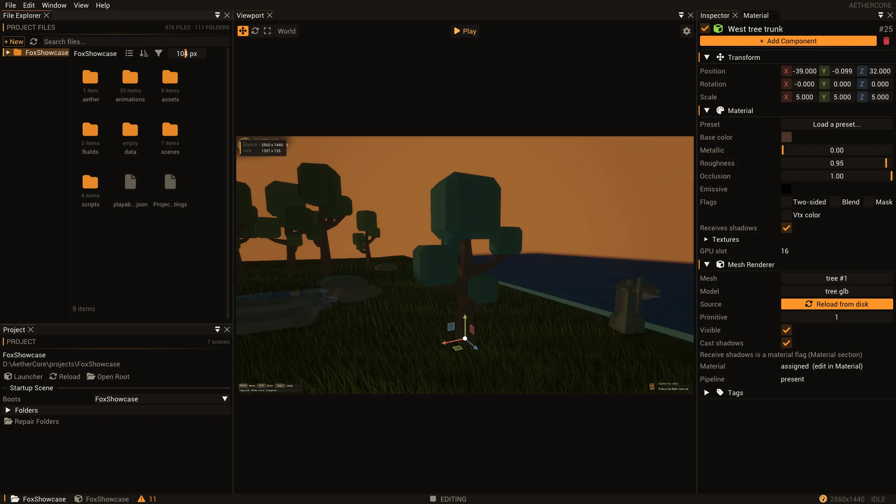

An editor your agent can use.
An agent can inspect and change the live scene through editor operations, then ask the engine what happened. The interesting part is the boundary between that structured protocol and the actual editor state.
Two protocols, one live editor
The MCP client speaks JSON-RPC over standard input and output to a Python server. For live editor operations, that server launches aether-ctl, a native client that sends JSON over ENet to the editor’s control endpoint. ENet remains on the C++ side; the Python server uses the standard library and subprocesses rather than a Python ENet binding.
The MCP client discovers tools and sends a named call with arguments over stdio. The Python bridge maps the tool to a wire method and invokes aether-ctl; the editor endpoint queues the request, runs the handler on the main thread and returns a result or error. Offline gameplay jobs and the gauntlet do not require an editor endpoint.
This extra process boundary has a cost: a live call depends on the bridge executable, a running endpoint and matching ports. In return, the agent requests editor-domain operations rather than reproducing the editor’s state model in a separate tool. See the MCP architecture and bridge invocation.

Discovery is part of the contract
The running endpoint’s describe returns each wire method, MCP tool name, description, mutation flag and parameter schema. The Python server turns those declarations into tools exposed through MCP tools/list. It merges the live manifest with a cached union of Launcher and Editor methods, so a client with a fixed tool list can survive their port handoff. A listed tool is not proof that the endpoint currently on that port implements it: calls still reach the current owner.
Before dispatch, the editor checks required arguments and, for methods with declared properties, rejects unknown names and mismatched declared types; underscore-prefixed metadata is exempt from the unknown-name check. Handlers still enforce operation-specific constraints. This is useful protection against a misspelled field silently selecting a default, not a guarantee that every semantically invalid request is impossible. Reconnect after server or schema updates and consult the live describe rather than relying on an old tool list. Read dispatch validation and manifest generation.
Mutation belongs on the editor thread
The network service parses and bounds incoming requests, then queues them for the main loop. When the queue changes from empty to non-empty it wakes the window; the main thread drains commands and dispatches handlers. Results are wrapped with the request ID, while handler errors become errors instead of successful results. The service also avoids delivering a delayed reply to a new connection that reused an old peer slot.
For example, scene.transform is exposed as set_transform. It accepts an entity ID and optional position, Euler rotation or scale; omitted fields retain their current values. The handler records a transform command on the undo stack when one is available. This is a real editor operation, not a simulated drag: it can be precise and inspectable, but it does not by itself prove the resulting frame looks right. See queue and dispatch and transform handling.
Inspect, change, verify
From the repository, build the editor and client, register the server, and restart your MCP client. Start the Launcher and open a project, or launch a project-scoped Editor with a matching AETHER_CONTROL_PORT. The default is 8787; the setup guide gives the exact launch alternatives.
cmake --build --preset default --target Editor aether-ctl
./scripts/Install-Mcp.ps1
aether-ctl describeRun the last command with the built aether-ctl on your PATH, or use its full path. In the MCP client, call list_entities and choose an ID from its returned names, positions and parent IDs. Call get_entity for details, then set_transform with that ID and the desired position. Read the entity again to check state; use undo_status or undo if appropriate. Finally, use screenshot to inspect the rendered editor frame and save_scene only when the change should persist. Use the live schema for argument shapes rather than guessing an entity ID or assuming a particular project.
The standalone client also accepts wire names such as scene.entities; describe shows the wire-to-tool mapping. For larger requests, the bridge streams JSON through stdin rather than placing it on the Windows command line. Batch operations report individual failures, so inspect each result instead of treating a response as an all-or-nothing success. Tool reference · client syntax.
State and pixels answer different questions
get_entity and list_entities expose scene state; get_console_log returns a bounded, filterable log; query_rendergraph describes compiled passes; and capture_texture writes a PNG of a registered texture. A screenshot can show the viewport and panels, but it cannot establish every component value or explain a render pass. Conversely, a correct transform response does not establish visibility, lighting or framing. Use the observation that matches the question.
UI automation is also available, but it is a different path. The setup guide distinguishes ui.click for the editor’s ImGui interface from send_input for game-rendered UI. Synthetic input can exercise much game input without window focus; actual cursor lock still depends on focus. Structured scene commands avoid fragile coordinates for scene edits, while UI interaction remains useful when the interface itself is what needs checking. Input boundaries.
Local is a boundary, not a permission model
The control server binds to 127.0.0.1; the Launcher starts a small hub endpoint and hands its port to the Editor when a project opens. The Control Server panel can start or stop the endpoint and select a port. The standalone GameRuntime does not include these endpoints. Loopback limits network exposure, but does not make an editor mutation harmless: treat processes and agents on the same machine as trusted users of a live project, and stop the endpoint when it is not needed.
There are separate offline tools for project inspection and persistent build, test, run and publish jobs. An authored-file inspection is not runtime verification; likewise, a successful live edit is not a saved scene or a tested game. Choose the path whose evidence answers the actual question. Loopback bind · handoff and port configuration · offline inspection limits.